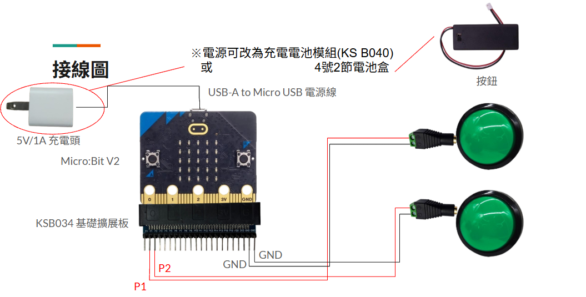

小蝌蚪藍牙滑鼠按鍵
說明影片
程式下載 : (版本2)藍牙切換開關(2)
📄 Microbit程式下載網址: 版本2
https://github.com/wen033codes/BT-switch-v2.git

小蝌蚪藍牙滑鼠按鍵材料
- Micro:Bit V2 1片
- 5V/1A充電頭 1個
- 2.54mm(母) 轉 2.54mm (公) 杜邦線 2條
- KSB034 基礎擴充板
- 充電電池模組(KS B040) 1個 ※可選
- 4號2節電池盒 1個 ※可選
- 按鈕 2個
- 2芯單聲道音源(母頭) 2個
其他參考 : KS B040充電電池模組組裝方法